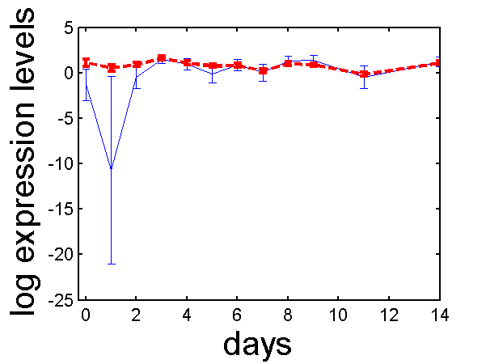

MATLAB code for PCA in data with heteroschedastic noise. Originally targeted at gene expression analysis.
The NPPCA software is available from here.
Current release is 0.111.
The software also relies on Ian Nabney's Netlab toolbox. It is available from here and it needs the digamma function, a version is available from Tom Minka's 'lightspeed' toolbox here.
You should also download the latest version of the NDLUTIL toolbox utility files from here. Make sure that the NDLUTIL has priority over the lightspeed toolboxes as they both contain different versions of the logdet function.
The toolbox can be used to recreate the experiments in the bioinformatics paper. However running on full data sets takes overnight on a desktop computer. We therefore suggest that you test the implementation using the script.
>> demoOC1gata3This will plot simple results from a reduced version of the OC1 data set.

gata3 profile before (blue solid line) and after (red dash line) analysis with PCA. Error bars are indicated which show for the blue line the variance in the measurements and for the red the posterior profile estimate variance.
Page last modified on Fri Jan 5 12:50:49 GMT 2007.